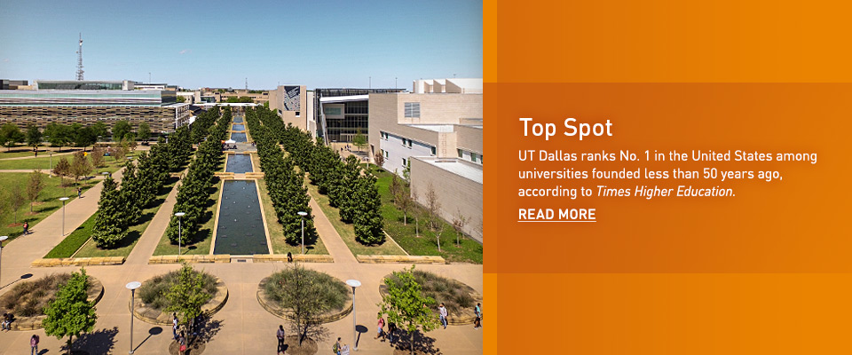

Opened in 1969, UT Dallas has evolved into one of the best research institutions in Texas. With 141 degree programs, we offer an extended variety of interests for your student to pursue in a convenient local setting. The university attracts the brightest minds in science, math and engineering and boasts one of the top business schools in the state. And an ever-expanding breadth of degree programs and capital improvements to the campus promise to push UT Dallas to the fore of education excellence.
Ranked as one of the top 100 tuition values in the United States by Kiplinger’s Personal Finance, UT Dallas offers high-caliber instruction at a reasonable rate. In addition, families can find a wealth of financial aid programs to help ease educational costs.
Learn more about student outcomes, including the careers and continued education of UT Dallas graduates. Students and families are also encouraged to visit Texas CREWS, the Consumer Resource for Education and Workforce Statistics, which provides comparative information about Texas public 2- and 4-year postsecondary institutions based on wages and student loan levels.
At UT Dallas, the future looks as bright as the one you envision for your child. Our efforts are focused on achieving our mission:
Producing engaged graduates prepared for life, work and leadership
Advancing excellent educational and research programs in natural and human sciences, management, technology and the liberal and practical arts
Transforming ideas into actions that directly benefit the personal, economic, social and cultural lives of Texas citizens.